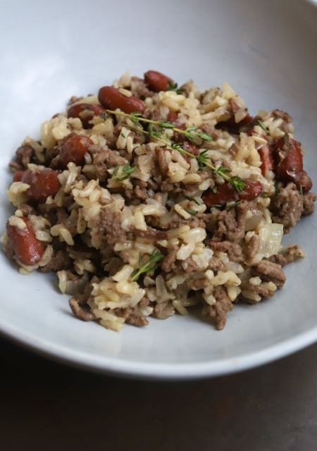

Ground Beef, Beans, and Rice Meal Prep

Description
Ground beef, beans, and rice is a nutritious and filling meal prep option that's perfect for busy weeks. This recipe combines seasoned ground beef with hearty beans and fluffy rice, creating a well-balanced dish that's rich in protein and fiber. It's easy to prepare and stores well, making it an ideal choice for meal prepping. Customize it with your favorite spices and toppings for a meal that's both delicious and convenient.
Ingredients
- 1 lb ground beef
- 1 can black beans, drained and rinsed
- 1 can kidney beans, drained and rinsed
- 1 can diced tomatoes
- 1 large onion, diced
- 2 cloves garlic, minced
- 2 tablespoons olive oil
- 1 teaspoon chili powder
- 1 teaspoon cumin
- 1/2 teaspoon smoked paprika
- Salt and pepper to taste
- 2 cups cooked rice
- Optional toppings: shredded cheese, chopped cilantro, lime wedges
Steps
- Heat the olive oil in a large skillet over medium heat.
- Add the diced onion and sauté until it starts to soften, about 3-5 minutes.
- Add the minced garlic and cook for an additional 1-2 minutes until fragrant.
- Add the ground beef to the skillet and cook until browned, breaking it apart with a spoon as it cooks, about 7-10 minutes.
- Drain any excess fat from the skillet.
- Add the black beans, kidney beans, and diced tomatoes to the skillet. Stir to combine.
- Season with chili powder, cumin, smoked paprika, salt, and pepper.
- Let the mixture simmer for 10-15 minutes, allowing the flavors to meld together.
- Divide the cooked rice into meal prep containers and top with the ground beef and bean mixture.
- Optional: Add shredded cheese, chopped cilantro, and a squeeze of lime juice before serving.